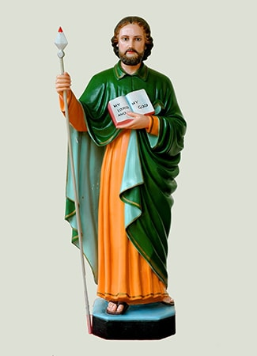

Principal Patron
St. Thérèse of Lisieux The Little Flower
Our principal patron, who teaches us to do small things with great love.
St. Mary's Syro-Malabar Mission, Wellington
Growing in Faith, Serving with Love
We are delighted to welcome the Cherupushpa Mission League (CML) into the family of St. Mary’s Syro-Malabar Mission, Wellington.
CML is one of the mission groups of the Syro-Malabar Church, dedicated especially to helping children and young people grow in their love for Christ, the Church, and missionary life. Founded on 3 October 1947 in Bharananganam, Kerala, India, CML has grown into a mission movement with a presence in parishes around the world.
At the heart of CML is the example of St. Thérèse of Lisieux, the Little Flower, our heavenly patron. St. Thérèse taught us her “Little Way” — that even the smallest things, when done with great love, can become a beautiful offering to God. Her childlike trust, love for God, and missionary spirit continue to inspire every CML member.
Do small things with great love.
The Little Way of St. ThérèseCML seeks to foster a strong missionary spirit among children and young people and to support the mission of the Church through:
It reminds us of the Christian call to love God and others, follow Christ through selfless sacrifice, and serve our community and society.
CML is guided by the example of its heavenly patrons:
Our principal patron, who teaches us to do small things with great love.

A powerful reminder of faith, witness and the missionary foundation of the Church.
A model of missionary zeal and dedication to spreading the Gospel.
An inspiring example of holiness, faith, perseverance and surrender to God.
Together, these saints encourage our young people to live their faith courageously and share the love of Christ with others.
CML provides children and young people with opportunities to learn, serve, lead and grow together as a community of faith. CML encourages our young people to discover their gifts while becoming more actively involved in the life of the Church.
The CML logo itself reflects this mission.
Reminds us to study and live according to God's Word.
Represents our salvation.
Reminds us to carry the light of Christ into the world.
Remind us of our responsibility to proclaim the Gospel.
With the beginning of CML at St. Mary’s Syro-Malabar Mission, Wellington, our children now have a dedicated space to pray, learn, serve, lead and grow together in faith.
CML is more than a programme for children. It is an opportunity to build friendships, strengthen our parish community, develop leadership and teamwork, and encourage our young people to become active members of the Church.
Years 5–7
Years 8–10
Our CML family is organised into Junior CML for Years 5–7 and Senior CML for Years 8–10, with members working together in missionary groups inspired by St. Thomas the Apostle, St. Francis Xavier and St. Alphonsa.
Points earned by our missionary groups, updated straight from the CML score sheet.
As our CML journey begins in Wellington, we look forward to creating many opportunities for our children to put their faith into action.
From prayer and liturgical participation to mission activities, fundraising, creative activities, sports and community service, every experience is an opportunity to discover the joy of giving and serving.
CML also encourages our young people to take an active role in supporting the missionary life of the Church. Mission Sunday activities provide opportunities for children and families to pray, contribute, create and participate together.
Through these activities our children learn that even small acts of generosity and service can make a difference.
We warmly invite our children and families to become part of the CML family at St. Mary’s Syro-Malabar Mission, Wellington.
Let us walk together in the Little Way of St. Thérèse — discovering Christ through prayer, serving others with love, growing together in faith, and bringing the light of Christ into our homes, parish and wider community.
Together, let us nurture a generation of young people who know their faith, love their Church, serve others and carry the missionary spirit forward.
Come and join our CML family!
Together, we can make a difference — and a lot of noise!